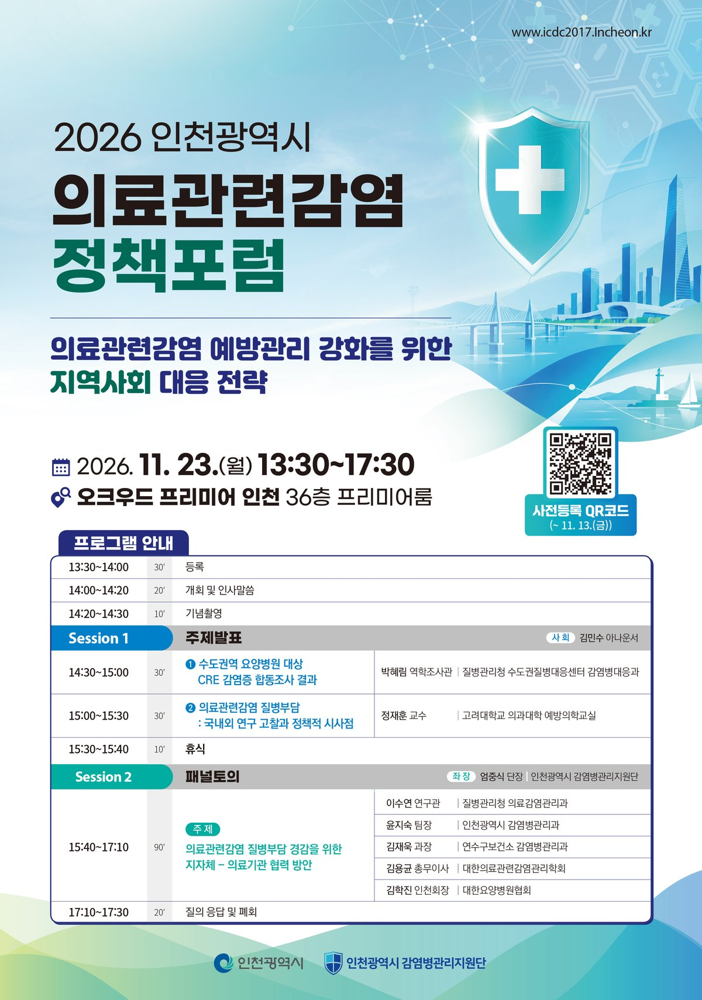
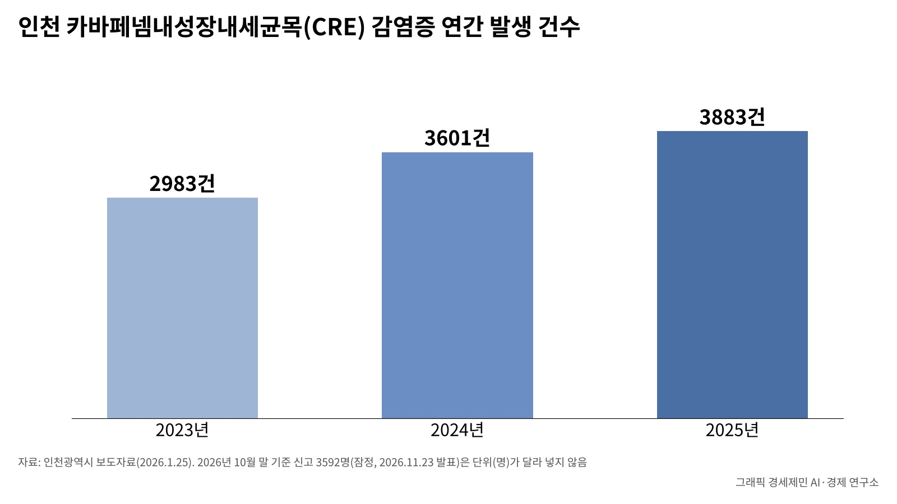

인천 CRE 감염증 신고 10월까지 3592명, 요양병원 비중 25.2%
인구 10만명당 118.3명, 국내 91.9명
2025년 국내 CRE 사망 944명, 결핵 제외 법정감염병 최다
사전 설문, 가장 시급한 지원은 비용 62.2%
AI경제저널=김갑봉 기자 | 인천시 집계를 보면 올해 10월 말 기준 인천 카바페넴내성장내세균목(CRE) 감염증 신고 환자는 3592명(잠정)으로 지난해 같은 기간보다 10.0% 늘었다.
인천 CRE 신고 가운데 요양병원 비중은 2017년 7.2%에서 올해 25.2%(잠정)로 높아져 3.5배가 됐다(연구소 계산).
인천시는 23일 오크우드 프리미어 인천에서 「2026 인천광역시 의료관련감염 정책포럼」을 열고 보도자료로 이 수치를 밝혔다. 포럼 주제는 「의료관련감염 예방관리 강화를 위한 지역사회 대응 전략」이다.
인천시와 인천광역시 감염병관리지원단이 함께 주관했다. 질병관리청, 인천시 감염병관리과, 보건환경연구원, 군·구 보건소, 관내 의료기관과 요양병원 감염관리 실무자 등 120여명이 참석했다.

2025년 국내 신고 4만9053명, 60대 이상 86.5%
CRE 감염증은 카바페넴계 항생제에 내성을 보이는 장내세균목 균종이 일으키는 감염증이다. 기존 항생제에 반응하지 않아 치료가 어렵고 치명률도 높다. 주로 중증 환자가 많은 종합병원과 요양병원에서 직·간접 접촉으로 퍼진다.
질병관리청 「2025 감염병 신고 현황 연보」를 보면 국내 CRE 감염증 신고 환자는 2024년 4만2346명에서 2025년 4만9053명으로 15.8% 늘었다. 환자 86.5%가 60대 이상이었다.
2025년 법정감염병(결핵 제외) 사망자 1307명 가운데 CRE 감염증 사망자가 944명으로 가장 많았다.
질병관리청과 분당서울대학교병원 감염내과 송경호 교수팀은 10월 28일 국내 21개 병원 입원환자 4만9651명을 2024년 4월부터 2025년 1월까지 네 차례 조사한 결과를 발표했다. CRE 감염 환자의 30일 사망률은 16.9%였다. 이 수치는 기저질환 등이 함께 반영된 전체 사망률이다. CRE 감염 1건당 의료비용 중앙값은 4600만원이었다.
질병관리청이 11월 16일 낸 「2025 국가 항균제 내성균 조사 연보」를 보면 국가 항생제 내성 정보 모니터링(KARMS) 대상 국내 요양병원에서 검출된 폐렴막대균 카바페넴 내성률(CRE(KPN))은 전년 47.7%에서 60.4%로 올랐다.
인천 연간 발생 2983건→3883건, 시범사업 2년째
인천 CRE 감염증 발생률은 올해 10월 말 기준(잠정) 인구 10만명당 118.3명으로 국내 발생률 91.9명보다 높다. 인천시가 1월 25일 밝힌 인천 CRE 감염증 연간 발생 건수는 2023년 2983건, 2024년 3601건, 2025년 3883건이다.

질병관리청은 2025년부터 인천·경기·부산에서 CRE 감염증 감소전략 사업을 시범 운영하고 있다. 인천시는 여기에 지역 특화 전략을 붙여 1월 23일 참여 의료기관을 모집하는 설명회를 열었다. 모집 목표는 종합병원 5곳, 요양병원 10곳이었다.
인천시는 7월 29일 참여 기관 간담회를 열고 침상 난간·문손잡이·호출벨 같은 다빈도 접촉 구역 청소·소독 관리를 크게 강화할 방침을 밝혔다. 매월 기관별 검사 지점을 골라 아데노신삼인산(ATP) 청결도 검사를 하고 결과를 기관에 알리겠다고 했다.
합동조사 요양병원 10곳, 실행 단계 공백
포럼 첫 발표자인 박혜림 질병관리청 수도권질병대응센터 역학조사관은 「수도권역 요양병원 대상 카바페넴내성장내세균목(CRE) 감염증 합동조사 결과」를 발표했다. 중앙과 지자체가 올해 6~8월 수도권역 요양병원 10곳을 함께 조사한 결과다.
조사 대상 요양병원은 감염관리실 운영 등 기본 체계를 갖췄지만 상시 감시와 접촉주의, 항생제 관리 등 실행 단계에서 공백을 드러냈다. 박 조사관 발표에서 개선 방안으로 지침 보강, 상시 컨설팅, 감시배양 지원 등이 나왔다.
정재훈 고려대 의과대학 예방의학교실 교수는 「의료관련감염 질병부담: 국내외 연구 고찰과 정책적 시사점」을 발표했다. 정 교수는 다면적 감염관리 중재로 의료관련감염을 35~55% 줄일 수 있다는 연구 사례를 소개했다.
정 교수는 정기 조사로 국내 질병부담을 객관적으로 산출하고 근거 기반 정책을 수립할 필요성을 설명했다.
사전 설문 애로 1위, 격리·코호트 운영 33.3%
포럼에 앞서 한 설문에서 응답자는 감염관리에서 가장 큰 애로로 격리·코호트 운영(33.3%)을 꼽고, 그 원인으로 시설과 격리병상 부족(32.2%)을 들었다. 지자체와 의료기관이 협력하는 데 가장 시급한 지원으로는 검사·물품 등 비용 지원(62.2%)을 꼽았다.
엄중식 인천광역시 감염병관리지원단장이 「의료관련감염 질병부담 경감을 위한 지자체–의료기관 간 협력 방안」을 주제로 한 패널토의 좌장을 맡았다.
이수연 질병관리청 의료감염관리과 연구관, 윤지숙 인천시 감염병관리팀장, 김재욱 연수구보건소 감염병관리과장, 김용균 대한의료관련감염관리학회 총무이사, 김학진 대한요양병원협회 인천회장이 토론자로 참여했다.
조명희 인천시 감염병관리과장은 "의료관련감염은 개별 의료기관의 노력만으로는 한계가 있어 지자체와 중앙정부가 함께 대응해야 한다"며 "현장 의견을 바탕으로 실효성 있는 지원 방안을 검토하겠다"고 밝혔다.
인천시는 포럼에서 나온 전문가 제언과 현장 의견을 검토해 향후 정책 제안과 2027년 의료감염병 관리사업 방향에 반영할 계획이다.
참고문헌
- 「인천시, 요양병원 등 의료관련감염 예방·관리 해법 모색」, 인천광역시(감염병관리과) 보도자료, 2026.11.23., https://www.incheon.go.kr/IC010205/view?repSeq=DOM_0000000016072157
- 「인천시, 인천형 카바페넴내성장내세균목(CRE) 감염증 감소전략 사업 설명회 개최」, 인천광역시(감염병관리과) 보도자료, 2026.1.25., https://www.incheon.go.kr/IC010205/view?repSeq=DOM_0000000014028985
- 「인천시, 의료기관과 함께 '카바페넴내성장내세균목(CRE) 감염증 감소전략' 논의」, 인천광역시(감염병관리과) 보도자료, 2026.7.29., https://www.incheon.go.kr/IC010205/view?repSeq=DOM_0000000015243097
- 「2025년에는 어떤 감염병이 유행했나 — 방역통합정보시스템 신고 정보 기반 「2025 감염병 신고 현황 연보」 발간」, 질병관리청(감염병정책과) 보도자료, 2026.6.29., https://www.kdca.go.kr/bbs/kdca/42/311564/artclView.do
- 「「2025 국가 항균제 내성균 조사 연보」 발간」, 질병관리청(항생제내성관리과) 보도참고자료, 2026.11.16., https://www.kdca.go.kr/bbs/kdca/42/313440/artclView.do
- 「의료기관 다제내성균 감염관리 우선순위 제시, CRE 최우선 관리 필요」, 질병관리청(의료감염관리과) 보도자료, 2026.10.28., https://www.kdca.go.kr/bbs/kdca/42/313069/artclView.do
사진 출처
- [사진1] 인천광역시 보도자료 첨부 포럼 포스터(2026.11.23), 공공누리 출처표시
- [사진2] 연구소 작성 도표. 자료: 인천광역시 보도자료(2026.1.25)
※ 이 기사는 인공지능기자 위민아이(Wemin_AI)와 협력해 작성했습니다.
저작권자 © AI경제저널 무단전재 및 재배포, AI학습 및 활용 금지